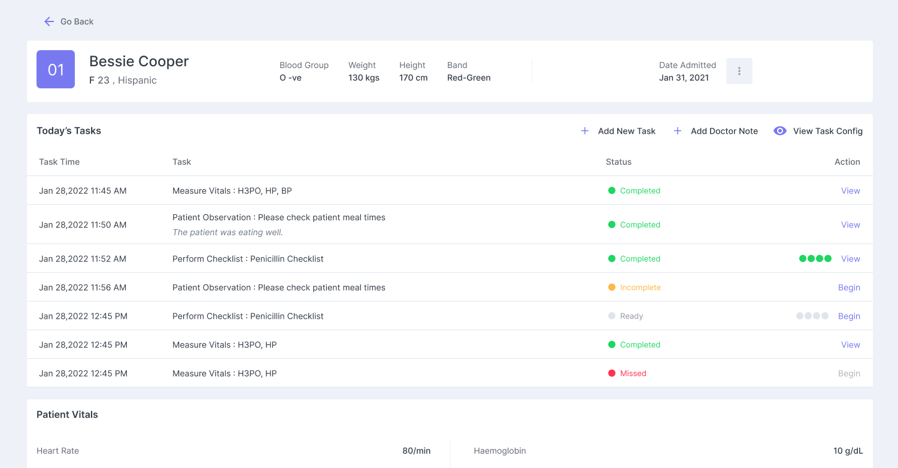
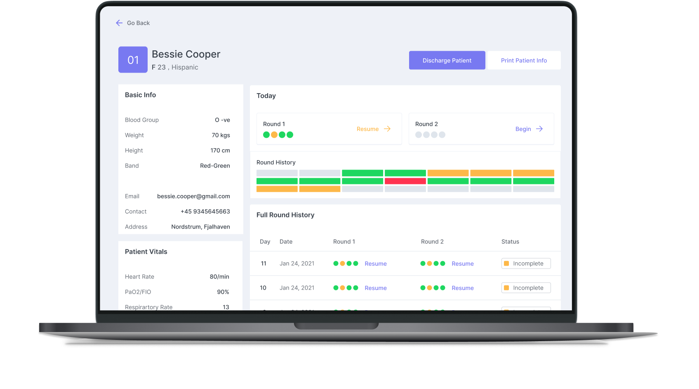
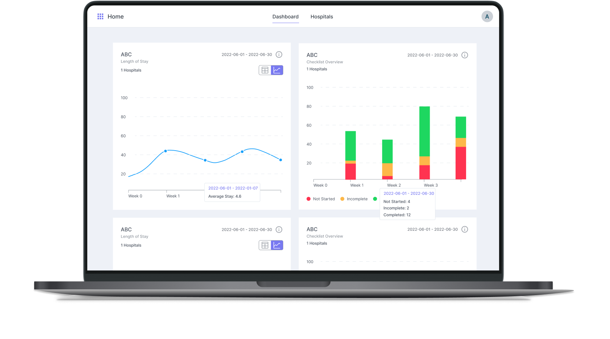

Improving
Patient
Diagnostics
A clinical intelligence platform that turned fragmented hospital data into two focused dashboards, giving administrators, nurses, and doctors the same operational picture.

What I
personally owned
I owned the design end-to-end. Here’s the split between my work and the broader team’s.
I owned this
The team handled this
Clinical data,
made clear.
Intellix is an advanced healthcare intelligence platform designed to help clinical teams transform complex, fragmented medical data into clear, actionable insights, supporting better decisions for both patient care and hospital operations.
My work focused on two critical modules: the KPI Dashboard (enabling admin teams to monitor key performance indicators across hospitals) and the Patient Dashboard (giving nurses and doctors a clean, structured view of each patient's care plan, vitals, and task status).
No centralized
way to track
what matters.
The Intellix Admin Dashboard lacked a dedicated feature for monitoring and managing key performance indicators. Users had no centralized way to view or track critical metrics, patient length of stay, checklist completion rates, or operational safety data.
The gap: administrators had no live view of length of stay, checklist completion, or safety data, so issues surfaced after they became incidents, not before.
The decisions
that mattered
Four decisions shaped the clinical workflow. Each came from a specific pain point and changed how care teams worked day to day.
Flat task list with no priority signals
All tasks shown in a plain list with no visual differentiation, completed, missed, and urgent tasks looked identical, causing nurses to miss critical items.
Status-coded task list with clear visual hierarchy
Each task now has a colour-coded status badge (Completed · Incomplete · Missed · Ready) and a progress indicator, critical tasks surface immediately without scanning.
KPI data buried in spreadsheet exports
Administrators had to export raw data and build their own charts in Excel. No real-time view, no trend visibility, no alerts.
Live KPI dashboard with configurable modules
A fully configurable dashboard with real-time line and bar charts, date filtering, and hospital-level drill-down. Administrators can build the exact view their department needs.
Patient profile required multiple screens to understand
Basic info, vitals, tasks, and round history lived on separate pages, nurses had to navigate back and forth during a round, losing precious time.
Unified patient dashboard, everything on one screen
Patient vitals, today's tasks, round history, and discharge options all visible on a single, scannable page. Nurses get full context at a glance without leaving the view.
Checklist system was one-size-fits-all
A single fixed checklist template applied to all departments, useless for specialties with unique protocols and terminology.
Configurable checklist with department-specific templates
Department heads can define task types, medical terms, and objectives specific to their specialty. Clinical staff see only what's relevant to their role.
The final
iteration
Validated through multiple rounds of stakeholder reviews and direct feedback from hospital staff, doctors and nurses using the system in real clinical settings.


The results
The KPI and patient dashboards gave clinical teams a single, configurable view of performance and care, validated with hospital staff across two high-stakes workflows.
What I learned
Designing for high-stakes users
Nurses and doctors are under pressure, time-constrained, and can't afford confusion. Every interaction needed to be obvious , not clever. This project taught me that the best healthcare UX is the UX you don't notice.
The KPI module expanded my scope
This was my first experience designing a data visualisation module , turning complex performance data into clear charts that administrators could act on. It significantly sharpened my data UX skills and opened a new direction in my career.
Want the full story?
The outcome is only half of it. The trade-offs, the rejected directions, and the decisions behind this project are where the real work lives. I’m happy to walk you through them.